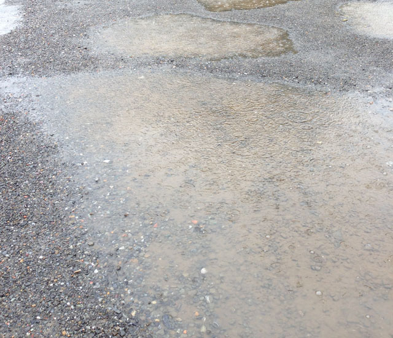
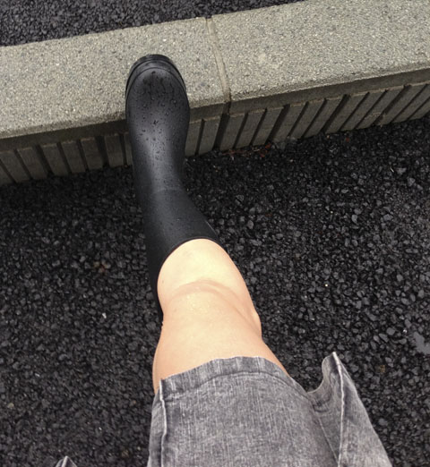

2014/06/06 18:23
夫がお風呂に入っている時に、私はお風呂場の扉を開ける癖があります。
この行為には何の意味もないのです。
夫と私の時間は、夫の出勤前のほんとうに僅かな時間と、
夫が仕事から帰って来てからの夕飯を食べている時間くらいですから、
私がお風呂場の扉を開けて声を掛けるのは少ないコミュニケーションの時間のほんとうに一部。
でも、あの日は違いました。
3月
一度声を掛けに行ってから、いつもより遥かにお風呂場の滞在時間が長い。
普段だったら疾うにお風呂場から出て、ダイニングチェアに座って居る筈の時間。
「ご飯出来ているのに・・・遅いなぁ..」
何の音も聞こえない。
「もしかして？」
私の頭に真っ先に過ぎったのは「倒れているんじゃない？」って・・・
私は慌ててお風呂場へ行き、勢いよく『ガラッ』っと扉を開けた。
扉を開けて私の目に飛び込んで来た映像はそこで停止。
倒れているのでは無かった。
夫は湯船に浸かり、携帯電話を片手に股間を膨らませているのでした。
夕飯出来ているのに・・・遅いなぁ・・・倒れているのでは・・・?
「倒れているのでは?」と言う不安と焦りを抱えて向かった先・・・
あまりにも予想外な結果に、自分が惨めになり私は苛立ちを隠せなかった。
何と言ったか思い出せないけれど、罵声を浴びせたに違いない。
夫に携帯で何を見ていたのか問い質した。
何だかハッキリしない回答。
私は夫が何を見ていたのか携帯を見て確かめた。
私が目にしたのは長靴を履いた少女の文章。
私の想像とは全く違った。
長靴を履いた少女が泥まみれになる文章。
それは夫自ら書いた文章。
私の想像を遥かに超えた物だったという事もあるけれど、
何度考えても理解し難い事だった。
まだ、その時は。
その出来事をキッカケに夫婦の間に大きく深い溝が出来た気がした。
これではいけないと、必死に明るく振舞おうとするものの、
どこか頭の隅でずっと気になっていた。
夫「もう、見ないよごめんなさい。昔書いていた物を見ていただけ・・・」と夫は言っていたけれど、
希望は消し去る事は出来ない。
私に隠れてまたそういう行為に走るのでは？と思い出しては捩じ伏せて・・・の繰り返しだった。
オープンに何でも話す私とは異なって、夫は内秘めている事が普段から多い。
そんな夫に何か質問してもきっと話してはくれないだろうと・・・
このまま仮面夫婦のままだろう？と私は殻に閉じこもってしまった。
仲の良い夫婦と自分で思い込んでいただけあって、夫の隠し事がショックだった。
その一ヶ月後位、
私は何年も前から欲しかった『長靴』をネットで検索していると・・・
どこかで見た事のある文字を見つけた。
迷わずクリックした・・・
夫の管理しているHPだ。
偶然にも見つけてしまった。
この前私が見たのはほんとうに一部。
長靴を検索するつもりで開いたインターネット。
気づけば目的は変わり、夫の書いた文章を端から読み上げていた。
「理解出来ない！」そう心に言い聞かせている私がいる。
夫にその度当たってしまう。
数日経って、気が付くとまた夫のHPを覗いてしまっている自分がいた。
もう、何年も忘れていた衝動に駆られる。
「絶対嘘！そんな事はない！自分は違う！」って心で思いながらも、ドキドキしている自分がいた。
もう何年も前から長靴が欲しくて、時期が来ると『長靴』を検索していた。
レインブーツ等を履いて歩いている人を見るととてつもなく羨ましく感じていた。
でも、東京ではタブーな気がして検索しては悩み、ソコへ辿り着く事は無かった。
今年の大雪の日、出先でついに長靴を買う事が出来た。
長靴を買う理由には持って来いの日だったので、靴屋さんで長靴を購入。
大雪で急遽長靴を買う人も多かったみたいで、可愛い長靴は売り切れていた。
あまりオシャレな長靴を買って帰っても家族に理解されないかな。。
なんて思い、黒い長靴に妥協した。
遊ばずに帰らない理由なんて無い。
雪に長靴を履いた足を突っ込み、雪が溶けてグチャグチャになった水たまりにバシャバシャと入った。
色はどうでも、買って良かった。
そんな出来事を少し思い出した。
「もしかして・・・？違うよ..」
ついに梅雨が来た。
梅雨が近づくに連れ、ドキドキが高鳴っていた。
心持ちとは裏腹に否定し続けている自分が居た。
私の頭と本能は丸で別の生き物のようだった。
また『長靴』を検索している・・・
夫のHPに辿り着く。
嫌悪感を抱きながら見ていた筈が、気づけばドキドキしていた。
いや、ずっとドキドキしていたのかも知れない。
でも、気付かないふりをずっとしていたのかも知れない。
大粒の降る雨の日。
歩いて出掛けるには雨が強すぎる。
車があるのにワザワザ歩きで出掛ける必要も無いけれど、その衝動は抑えきれなかった。
私は迷わず長靴を履いて家を出た。
水たまりがアチコチに出来ている。
道中、長靴を履いている人が沢山いる！むしろ長靴を履いている人の方が多い。
東京では大人の長靴は『タブー』だと思っていたけれど、
ここの田舎では『普通』の事なんだと知るとホッとした。
堂々と歩けるね！
雨水が川の様に流れる坂道、窪みに出来た水たまり。
見るだけで少しドキドキ。
気が付けばソレに足を突っ込んでいる。
ふと、歩きながら子供の頃を思い出していた。
雨の日の学校帰りに水たまりに夢中になって靴下まで濡らして帰った事や、
車が通る度「バシャッ！」と跳ねる泥水を期待していたたり・・・
ドロドロになっている土に足を踏み入れたり。
思い出すととてもドキドキが増した。
無意識の内にとっていた行動が・・・
忘れていた衝動が・・・
鮮明に蘇った。
夫の事が理解できず、ずっと葛藤し苦しんでいたけれど・・・
それは夫の事が理解できないんじゃなくて、自分が怖かったのかも知れない。
大人になって、忘れていたソレを思い出すのが怖かったのかも。
でもね、雨の日に長靴で歩いて・・・
気付いてしまった。
本能的に求めていたんだって。
確信してしまった。
気付いたら、沢山濡らしちゃっていた。
